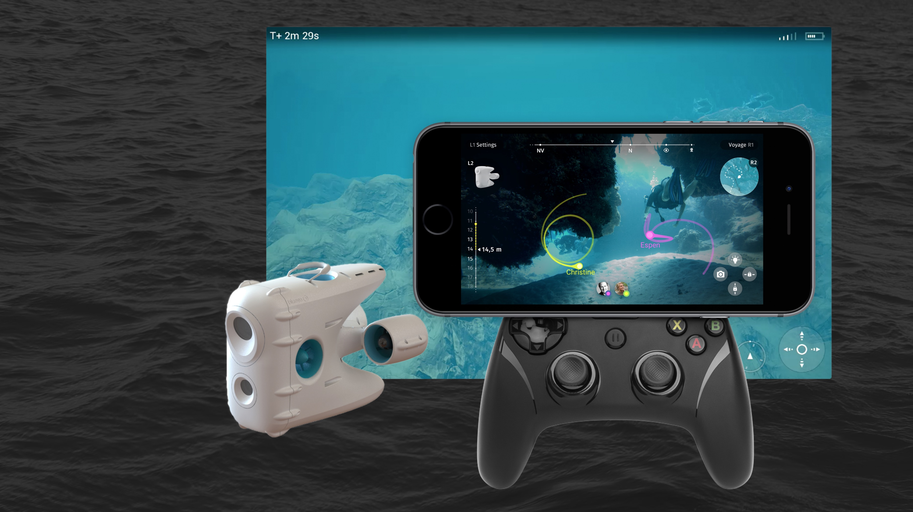
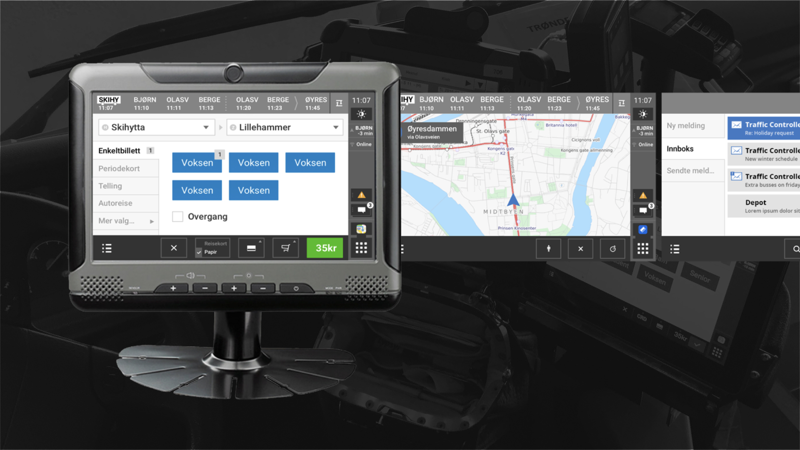
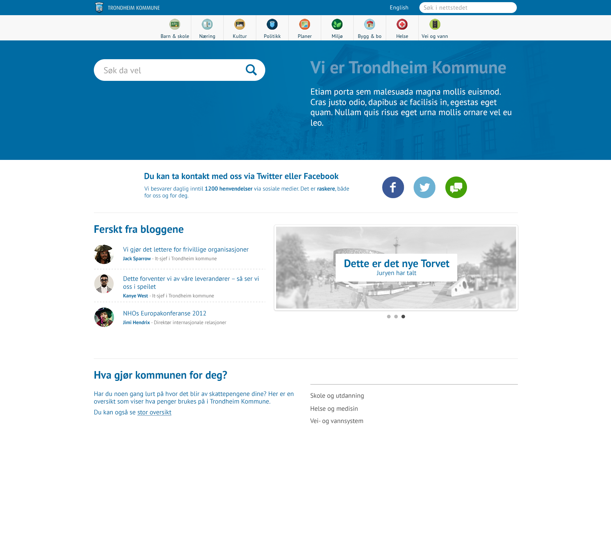

I am an interaction designer and I do most of my work in projects between the early prototype stage and final implementation. I love to work in highly technical, multi-diciplinary teams, and I try to keep my skillset wide. Currently I'm experimenting with real-time 3D rendering, VR, animation and all sorts of digital prototyping.
Sometimes I work on with side-projects in Unity or Unreal Engine. I teach what I know to my peers, and occasionally I do talks and workshops at conferences.
At the moment I work at EGGS Design and tweet at @AVanvik
I had a chance to work with Blueye robotics from early on in their adventure. Blueye were developing a submersible unmanned drone to make the sea more accessible to more people. In a highly multidiciplinary team, my role in the project has been to design the UI for controlling the drone.
A look into the ROV UI project I did for Blueye Robotics together with some of my very skilled co-workers
A quick talk about some of the prototyping tools I used at the time, and a peek into some projects.
Redesign of bus computer interface in Helsinki.
In my spare time I sometimes tinker on a 2D orbital mechanics meets real-time strategy game. The current version, I am making in Unity, but I have earlier versions made in Swift and Unreal Engine too.
Responsive government portal. I did the visual design and a lot of the front-end code.
After seeing Oblivion I just HAD to create this quick After Effects composition.
Silly slo-mo footage from my iPhone 5s somehow ended up like this.
Napha has a social network for psychology professionals.